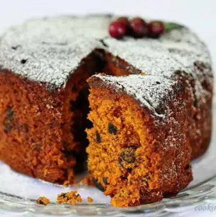

Kerala Plum Cake

DESCRIPTION
Kerala Plum Cake or Christmas Fruit Cake Recipe - a delicious and easy step by step recipe for fruit cake or
Kerala plum cake recipe.
INGREDIENTS
- 1 cup plain flour
- 1/2 cup cashew nuts
- 1/4 cup black raisins
- 1/2 cup mixed dried fruits
- 2 cup white sugar
- 2/3 cup unsalted butter
- 3 eggs
- 1/2 teaspoon cinnamon powder
- 1/4 teaspoon clove powder
- 1 teaspoon baking powder
- 1 teaspoon vanilla extract
- 1/4 teaspoon salt
Steps
- In a pan on medium heat, melt 1/2 cup sugar slowly.
- It will first melt and then turn into a dark brown goop. Keep stirring and let it turn a deep dark caramel
colour. Don't let it burn.
- Turn off heat and add about 1/4 cup water. The sugar will harden.
- Turn the heat back on and slowly heat the mixture until the sugar crystals dissolve.
- This will take around 10 mins.
- Once done, let it cool and set aside.
- Pre-heat oven to 350F / 180C.
- Add 3 tablespoon flour to the dry fruits and nuts and dredge completely to coat it. This is so that they
don't sink to the bottom of the batter while baking. Set aside.
- Mix the remaining flour and baking powder, spices, and salt until well combined.
- Beat the butter and 3/4 cup sugar until fluffy - about 10 mins by hand, 3-4 mins with an electric beater.
- Add vanilla and mix until combined. Next, add 1 egg and beat. Then add a bit of the flour mixture and fold.
Likewise, alternate between the eggs and flour mixture until they are both used up.
- Add the cooled caramel and dredged fruits and gently fold in.
- Pour batter into a greased cake pan and smooth the top.
- Bake for 50-55 mins until the top turns a dark brown and when a skewer inserted into the cake comes out with
moist crumbs.
- Start checking from 45 mins to see if the cake is done.
- The top will look like it's overdone but don't worry, make sure the inside is also completely cooked.
- Dust with icing sugar when the cake is completely cooled and serve
- Kerala plum cake can be stored at room temperature for 3 days and refrigerated for up to two weeks